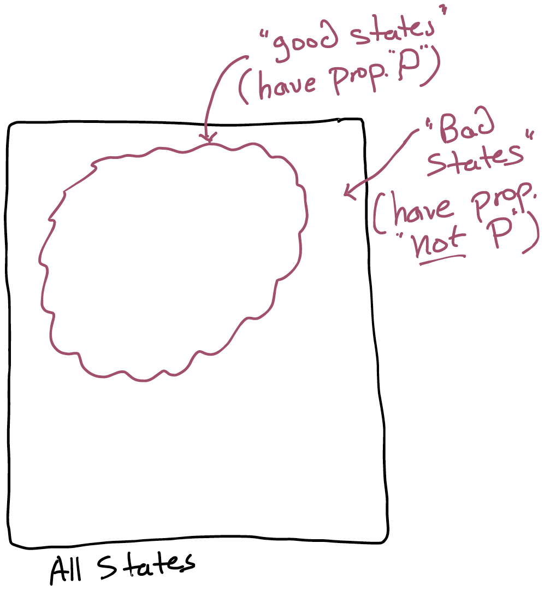
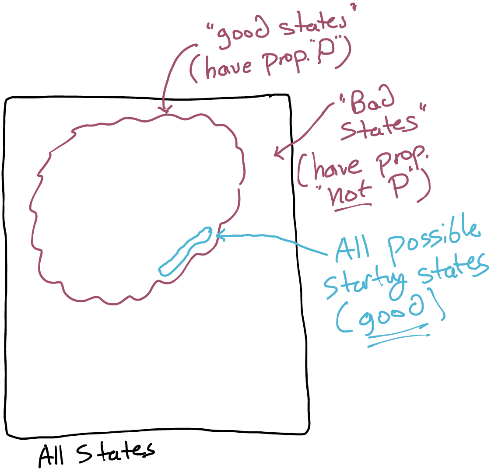
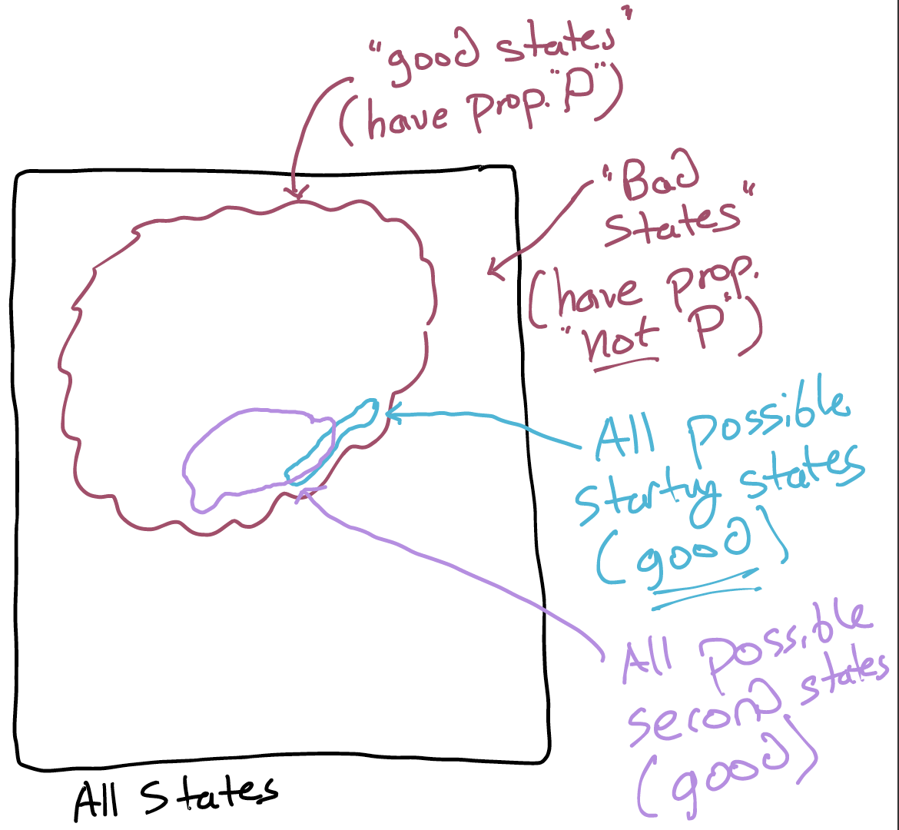
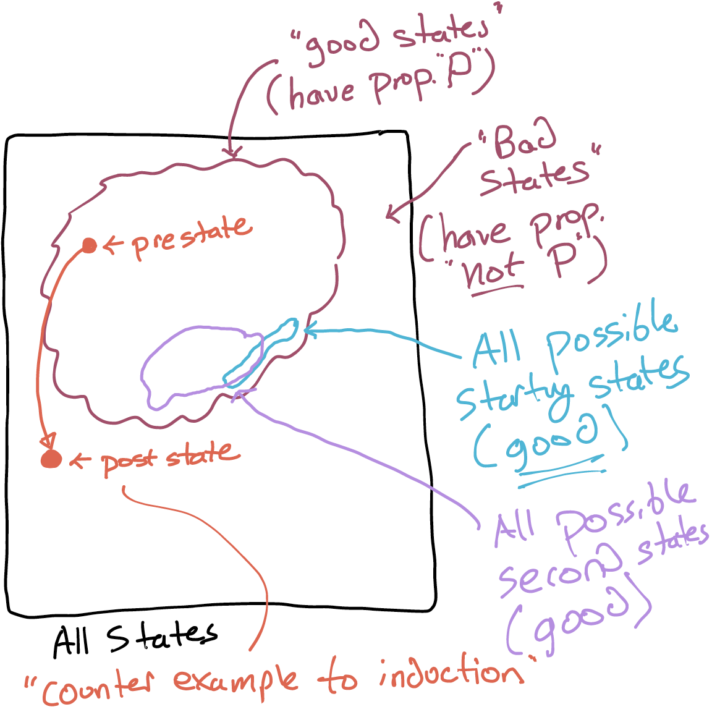

Counterexamples To Induction¶
This section contains a running exercise where we model binary search on an array. You'll need this exercise template to begin.
Solutions
For your reference, a completed version from 2025's offering of Logic for Systems, with comments from Q&A, is here.
Conceptual Setup¶
When we're talking about whether or not a reachable state violates a desirable property \(P\) (recall we sometimes say that if this holds, \(P\) is an invariant of the system), it's useful to think geometrically. Here's a picture of the space of all states, with the cluster of "good" states separated from the "bad":

If this space is large, we probably can't use trace-finding to get a real proof: we'd have to either:
- reduce the trace length (in which case, maybe there's a bad state just barely out of reach of that length but we'd never know); or
- possibly be waiting for the solver until the sun expands and engulfs the earth.
Complete-trace checking is still useful, especially for finding shallow bugs. The technique is used in industry, and inspires other, more sophisticated algorithmic techniques. But we need more than one tool in our bag of tricks, so let's keep developing the idea of only looking at 1 or 2 states at a time.
Original paper
If you're interested, you can read the original paper on using solvers to find traces of bounded length by Biere, et al..
To do that, we'll go back over what we did in the last section, but in more detail.
Step 1: Initiation or Base Case¶
Let's break the problem down. What if we just consider reachability for traces of length \(0\)---that is, traces of only one state, an initial state?
This we can check in Forge just by asking for a state s satisfying {initial[s] and wellformed[s] and not P[s]}. There's no exponential blowup with trace length since the transition predicates are never even involved! If we see something like this:

We know that at least the starting states are good. If instead there was a region of the starting states that overlapped the bad states, then we immediately know that the property isn't invariant.
Step 1.5: Restrictions Spur Creativity¶
We can also check whether there are bad states within \(1\) transition. We're using the transition predicate (or predicates) now, but only once. Forge can also do this; we ask for a pair of states s0, s1 satisfying {initial[s0] and someTransition[s0, s1] and not P[s1]} (where someTransition is my shorthand for allowing any transition predicate to work).
If Forge doesn't find any way for the second state to violate \(P\), it means we have a picture like this:

Note that in general, there might be overlap (as shown) between the set of possible initial states and the set of possible second states. For example, imagine if we allowed a doNothing transition at any time—then the starting state could be reached in any number of steps.
We could continue to extend this idea to 2 transitions (3 states), 3 transitions (4 states), and so on. If we keep following this process, we'll arrive back at the fully trace-based approach. And anyway, to address the exponential-blowup problem of traces, we said that we would only ever look at 1 or 2 states. But how can we ever get something useful, that is, a result that isn't limited to trace length 1?
We can (often) use these small, efficient queries to show that \(P\) holds at any finite length from a starting state. But how? By giving something up. In fact, we'll give up something apparently vital: we'll stop caring whether the pre-state of the bad transition is reachable or not.
Step 2: Consecution or Inductive Case¶
We'll ask Forge whether {P[s0] and someTransition[s0, s1] and not P[s1]} is satisfiable for any pair of states. Just so long as the pre-state satisfies \(P\) and the post-state doesn't. We're asking Forge if it can find a transition that looks like this:

If the answer is no, then it is simply impossible (up to the bounds we gave Forge) for any transition predicate to stop property \(P\) from holding: if it holds in the pre-state, it must hold in the post-state.
But if that's true, and we know that all initial states satisfy \(P\), then all states reachable in \(1\) transition satisfy \(P\) (by what we just checked). And if that's true, then all states reachable in \(2\) transitions satisfy \(P\) also (since all potential pre-states must satisfy \(P\)). And so on: any state that's reachable in a finite number of transitions must satisfy \(P\).
If you've seen "proof by induction" before in another class, we've just applied the same idea here. Except, rather than using it to show that the sum of the numbers from \(1\) to \(n\) is \(\frac{k(k+1)}{2}\) (or some other toy algebraic example) we've just used it to prove that \(P\) is invariant in a system.
In Tic-Tac-Toe, we let property \(P\) be "cheating states can't be reached with legal moves". In an operating system, \(P\) might be "two processes can never modify a block of memory simultaneously". In hardware, it might be "only one device has access to write to the bus at any point". In a model of binary search, it might be "if the target is in the array, it's located between the low and high indexes".
A CS Perspective
I think that showing a system preserves an invariant might be a far more relatable and immediately useful example of the induction principle than summation. That's not to dismiss mathematical induction! I quite like it (and it's useful for establishing some useful results related to Forge). But multiple perspectives enrich life.
Exercise: Try it! Open up the binary search model starter template. You should see a pair of tests labeled initStep and inductiveStep under a comment that says "Exercise 1". Fill these in using the logic above, and run them. Do they both pass? Does one fail?
What if Forge finds a counterexample?¶
What if Forge does find a transition that fails to preserve our property \(P\)? Does it mean that \(P\) is not an invariant of the system?
Think, then click!
No! It just means that the pre-state that Forge finds might not itself be reachable! In that case, we'll say that while \(P\) might be an invariant, it's not inductively invariant.
So, this 2-states-at-a-time technique can be a great way to quickly show that \(P\) is invariant. But if it fails, we need to do more work!
We see this happen when we try to run the above checks for our binary-search model! The inductiveStep test fails, and we get a counterexample.
Fix 1: Maybe the Property is Wrong!¶
Sometimes there are conditions about the world that we need in order for the system to work at all. For example, we already require the array to be sorted, or binary search breaks. Are there other requirements?
It turns out that there are. Here's one: the classic way to write binary search is actually broken in most systems. If I write mid = (low + high) / 2, and I'm working with machine integers (which have a maximum value), what happens if the array is large relative to the maximum integer in the system?
Think, then click!
On a 32-bit system, the maximum int value is \(2^32 - 1 = 4,294,967,295\), and any value over that "wraps around". So if the array is just a couple billion elements long (easily reachable even in the early 2000's at Google scale), the value of (high+low) can overflow. For example:
But this index isn't between low and high, and so the algorithm breaks. In Forge, we can adjust the number of bits available, and see the problem much sooner.
We're not trying to fix this problem in the algorithm. This is a real bug. Our modeling found it (admittedly, 20 years after the linked blog post). So let's remember the issue, and proceed. If the array is small enough, is the algorithm correct? We'll add a global assumption that the array is not so large. We'll add that in the safeArraySize predicate, which we'll then use in the 2 checks.
How can we express what we want: that the array is not too large?
Think, then click!
The core challenge here is that we'll never have enough integers to actually count #Int. However, we can ask for the maximum integer---max[Int]. So we could say that arr.lastIndex is less than divide[max[Int], 2]. This might be a little conservative, but it guarantees that the array is never larger than half of the maximum integer, and so it works for our purposes here.
Exercise: Try expressing this in the safeArraySize predicate, and adding it to the test that failed. Add a comment explaining why this is a requirement.
Fix 2: Enriching the Invariant¶
Sometimes the property we're hoping to verify is invariant in the system, but it's not preserved by the system transitions when we look at them in isolation. This would mean that the pre-state in any counterexample isn't actually reachable. In the full-trace approach, we didn't have this problem, since the trace was rooted in an initial state. This is the tradeoff of the inductive approach! We gain a big performance boost, but sometimes we have to do more work to make progress.
Concretely, we'll need to verify something stronger. At the very least, if \(S\) is the pre-state of the counterexample we were given, we need to change our property to be (where \(P\) is the old property) "\(P\) and the state isn't \(S\)". In practice, we try to add something more general that expresses the root cause of why \(S\) shouldn't be reachable.
The technique is sometimes called "enriching the invariant".
Exercise: Do you believe the counterexample you're getting is reachable? If not, what is it about the state that looks suspicious?
Exercise: Now add new constraints to the bsearchInvariant predicate that exclude this narrow criterion. Be careful not to exclude too much! An over-constrained property can be easy to verify, but may not actually give many guarantees.
But Can We Trust The Model?¶
Look again at the two checks we wrote. If initial were unsatisfiable, surely the Step 1 check would also be unsatisfiable (since it just adds more constraints). Similarly, unsatisfiable transition predicates would limit the power of Step 2 to find ways that the system could transition out of safety. If either of these bugs existed, Forge would find no initial bad states, and/or no bad transitions. It would look like the property was invariant, but really the check out pass because our model was overconstrained.
More concretely, Step 1 checks that all s: State | initial[s] implies good[s]. But if no s can possibly satisfy initial, then the overall constraint evaluates to true—no counterexamples are possible! This problem is called vacuity or vacuous truth, and it's a threat to modeling success.
Put another way...
Suppose I told you: "All my billionaire friends love Logic for Systems". I have, as far as I know anyway, no billionaire friends. So is the sentence true or false? You might (quite reasonably) say that it shouldn't be either true or false, but some sort of third value that indicates inapplicability. There are logics that work that way, but they tend to either be complicated, or to complicate building tools using them. So Forge uses classical logic, where A implies B is equivalent to (not A) or B.
The result is: Forge would say that the sentence is true. After all, there's no billionaire friend of mine who doesn't love Logic for Systems...
Watch out! Pay attention! This is a problem you might first hear about in a logic or philosophy textbook. So there's a risk you'll think vacuity is silly, or possibly a topic for debate among people who like drawing their As upside down and their Es backwards, and love writing formulas with lots of Greek letters in. Don't be fooled! Vacuity is a major problem even in industrial settings, because verification tools are literal-minded.
TODO: insert industry links from EdStem ref'd in 2024
At the very least, we'd better test that the left-hand-side of the implication can be satisfied. This isn't a guarantee of trustworthiness, but it's a start. And it's easy to check with Forge that some state can be initial or some transition can be executed:
assert {some s: State | initial[s]} is sat
assert {some pre, post: State | transition[pre, post]} is sat
Make sure you're always testing vacuity. Errors like this are more common than you might think.